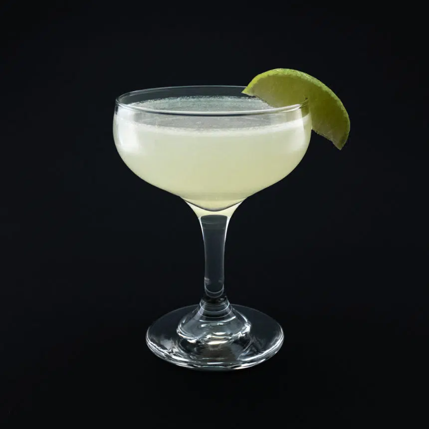

INGREDIENTES
- 60 ml de rum branco
- 30 ml de suco de limão fresco
- 15 ml de xarope de açúcar
- Gelo
INSTRUÇÕES
- Em uma coqueteleira, adicione o rum, suco de limão e xarope de açúcar.
- Encha a coqueteleira com gelo e agite bem.
- Coe para uma taça de cocktail gelada e sirva.